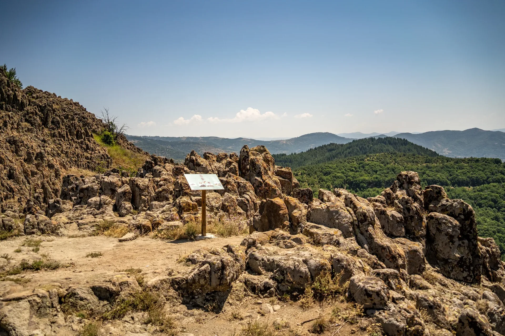

Практични информации
Испланирајте ја посетата
Кокино се наоѓа околу 30 км североисточно од Куманово и приближно два часа од Скопје. Еве како да стигнете, што да понесете и колку време да предвидите.
Време на локалитетот
Разгледувањето на локалитетот трае 1,5 до 2 часа, плус околу 15 минути искачување од паркингот до врвот.
Стражарска служба
На локалитетот постои стражарска служба од 9 до 17 часот, која ќе Ви помогне во движењето низ него. Кај нив можете да набавите брошури, флаери и друг информативен материјал.
Искачувањето
Патеката се искачува од околу 920 м на паркингот до малку над 1.000 м на врвот — пешачење од околу 20 минути по блага, осончена јужна падина.
Нашиот излет · Приватен · Од Скопје
Еднодневен излет до Кокино од Скопје
Тргнете на еднодневен излет од Скопје до опсерваторијата Кокино. Разгледајте ја древната опсерваторија, по желба уживајте во традиционален македонски ручек и восхитете се на прекрасните погледи кон околниот пејзаж.
Најважно
- Вратете се назад во времето додека ја разгледувате древната опсерваторија Кокино
- Восхитете се на прекрасните погледи кон околниот пејзаж
- Фотографирајте ја убавината на македонското село
- Застанете во една од најстарите астрономски опсерватории во Европа — локалитетот што НАСА го вклучи во својот преглед Ancient Observatories од 2005 година
Бесплатно откажување
Откажете до 24 часа однапред за целосно враќање на средствата
Резервирајте сега, платете подоцна
Задржете ја флексибилноста — резервирајте место и не плаќајте ништо денес
Времетраење 5 часа
Проверете ја достапноста за термините на поаѓање
Возач
Англиски, македонски
Приватна група
Патувате само вие — без непознати луѓе и без фиксен распоред за групи
Подигнување
Центар на Скопје или од врата до врата од вашата адреса во Скопје
Приватна тура · до 3 лица
Влезниците се вклучени. Четврти патник обично може да се смести — зависи од градбата и багажот, па слободно прашајте.
Итинерер
-
Почетна локација: Скопје
Подигнување од центарот на градот или од вашата адреса во Скопје.
Автомобил — 1 час
-
Мегалитска опсерваторија Кокино — 2 часа
Самостојно разгледување, прошетка, слободно време и фото-паузи, со прекрасни погледи по патот.
Автомобил — 30 минути
-
Етно село Тимчевски — 1 час
Пауза и традиционален македонски ручек во селото Војник.
По желба · дополнителен трошок Автомобил — 50 минути
-
Враќање во Скопје
Што е вклучено
- Самостојно разгледување на Кокино со свое темпо
- Влезници
- Приватен превоз со професионален возач
- Освежителни пијалаци (до 4 лица)
- Закуски (до 4 лица)
Не е вклучено
- Традиционален македонски ручек во Етно село Тимчевски — по желба, +40 € по лице
- Приватен туристички водич
Посетата на Кокино е самостојна. Доколку сакате официјален водич на локалитетот, тоа се договара посебно преку музејот.
Што да понесете
- Удобни обувки за пешачење
- Капа и крема за сонце
- Вода — на ридот нема
- Фотоапарат
Пушењето, храната и алкохолните пијалаци не се дозволени во возилото.
Ве молиме имајте предвид дека овој излет не е соодветен за:
- Деца под 10 години
- Корисници на инвалидска количка — локалитетот не е пристапен
- Патници над 110 кг
- Патници над 70 години
Овој излет го организира нашата сопствена транспортна компанија, Skopje Airport Taxi & Transfers, која води приватни еднодневни излети низ Северна Македонија. Можете да прочитате повеќе и за Етно село Тимчевски и за традиционалната македонска храна пред да одлучите за ручекот.
Како да стигнете
Со автомобил
Локалитетот Кокино се наоѓа во североисточниот дел на Македонија, околу 30 км североисточно од градот Куманово. За да се стигне од Куманово до Кокино треба да се помине покрај селото Старо Нагоричане и низ селото Драгоманце. После ова село тесен асфалтен пат води кон подножјето на вулканскиот рид познат како Татиќев Камен, на чиј врв се наоѓа локалитетот.
Работите околу заштитата и презентацијата на локалитетот се сè уште во тек, па паркирањето на возилата, за сега, е покрај патот во подножјето на ридот.
Движејќи се по патот од Куманово кон Кокино ќе поминете покрај селото Старо Нагоричане. Ви препорачуваме да застанете тука и да ја посетите црквата Свети Ѓорѓи, во самиот центар на селото. Црквата е позната по своите фрески од 14 век, кои спаѓаат во најубавите примери на византиската уметност од тоа време во светот.
Со велосипед
Од Куманово, движејќи се по регионалниот пат Е-871/А2, завртете кон селото Старо Нагоричане. Тука можете да направите пауза и да земете освежување, а препорачуваме да наполните вода од чешмата позади црквата.
Потоа продолжувате во правец на Пелинце, и на третиот километар после Старо Нагоричане вртите десно. Од тука до мегалитската опсерваторија има 14 километри. Патот се движи по угорница со просечен успон од 3,7%, со неколку зарамнети делови, и поминува низ неколку села каде што можете да се освежите и да наполните вода.
Доколку сакате да кампувате, тоа можете да го направите пред селото Кокино каде што ќе најдете убаво опремен летниковец со место за оган, маси и клупи, како и поток во близина. Вода можете да наполните во селото во непосредна близина. Исто така, можете да кампувате и на проширувањето кое се користи за паркинг во непосредна близина на локалитетот.
Тури со водич
Со археоастрономскиот локалитет Кокино управува Н.У. Музеј — Куманово, кој обезбедува стручни водичи за групите кои ќе го најават своето доаѓање. Договарањето се врши директно со музејот.

Што да понесете
- Соодветни обувки. Патеката е камен и растресита земја, не поплочена шеталиште.
- Вода. На ридот нема. Наполнете во селото.
- Заштита од сонце и ветер. Врвот е изложен во сите правци — тоа му е и поентата.
- Слушалки, и аудио водичот веќе вчитан пред да останете без сигнал.
Кога да дојдете
Секој ведар ден го оправдува искачувањето. За самите насочувања, изберете долгоденица или рамноденица и дојдете многу пред изгрејсонце. Средината на мај и самиот крај на јули се деновите кога светлината низ обредниот маркер ги осветлува троновите. За ноќното небо — а ова е вистински темно место — дојдете во ноќ без месечина во лето.
Чести прашања
Кокино, одговорено
Работите што луѓето најчесто ги прашуваат пред да тргнат.
Како да стигнам до Кокино од Скопје?
Кокино е оддалечено околу 90 км од Скопје, а патувањето трае приближно 1 до 2 часа. Нема директен јавен превоз од Скопје, па повеќето посетители доаѓаат со автомобил или резервираат приватен еднодневен излет. Од Куманово се поминува покрај Старо Нагоричане и низ Драгоманце, а потоа тесен асфалтен пат води до подножјето на ридот.
Колку трае посетата на Кокино?
Предвидете 1,5 до 2 часа на локалитетот, плус околу 15 до 20 минути пешачење нагоре од паркингот. Целодневниот излет од Скопје, заедно со патувањето, трае околу 5 часа.
Дали Кокино навистина е четвртата најстара опсерваторија според НАСА?
Не — тоа широко повторувано рангирање е недоразбирање. Во 2005 година образовниот форум на НАСА „Sun-Earth Connection“ го вклучи Кокино во образовен преглед на древни опсерватории наречен Ancient Observatories: Timeless Knowledge. Тоа беше спомнување, а не рангирање, и НАСА никогаш не објавила редослед на најстари опсерватории. Кокино навистина е една од најдобро зачуваните археоастрономски локалитети од бронзеното време во Европа, што е и поинтересниот факт.
Што е Кокино и зошто е важно?
Кокино е мегалитска опсерваторија и планинско светилиште од бронзеното време на вулканскиот рид Татиќев Камен во Северна Македонија, датирано околу 1800 г. пр. н. е. Неговите градители всекле платформи и камени маркери во карпата за да ги следат изгревите на сонцето при долгоденицата и рамноденицата, како и крајните изгреви на полната месечина, создавајќи лунарен календар со циклус од 19 години.
Дали постои аудио водич за Кокино?
Да, и е бесплатен. Оригиналниот водич беше мобилна апликација што исчезна заедно со старата страница; седумте снимки се обновени на оваа страница и се пуштаат во секој телефонски прелистувач. Можете и да го преземете секој дел пред да тргнете, бидејќи сигналот на гребенот е несигурен. Отворете го аудио водичот.
Кога е најдобро да се посети Кокино?
Секој ведар ден го оправдува искачувањето. За да ги видите самите насочувања, дојдете на долгоденица или рамноденица и пристигнете многу пред изгрејсонце. Средината на мај и самиот крај на јули се деновите кога светлината низ обредниот маркер паѓа на камените тронови. За набљудување ѕвезди изберете летна ноќ без месечина — Кокино има вистински темно небо.
Колку чини посетата на Кокино?
На локалитетот има стражарска служба од 9:00 до 17:00 часот која може да ви обезбеди печатен материјал. Нашиот приватен еднодневен излет од Скопје чини 119 € вкупно за до три лица, со вклучени влезници; традиционалниот македонски ручек во Етно село Тимчевски е по желба, +40 € по лице.
Дали Кокино е пристапно за корисници на инвалидска количка?
Не. До платформите се стигнува по камена и нерамна патека со пешачење од 15 до 20 минути, без уредена површина, па локалитетот не е пристапен за инвалидски колички. Нашиот излет исто така не е соодветен за деца под 10 години ниту за патници над 70 години.